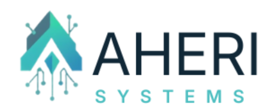

Aheri Systems is a boutique business automation and AI implementation firm dedicated to transforming service-based SMBs and entrepreneurs through intelligent systems and customer journey optimization. Based in Nairobi, Kenya, with a global reach, we make enterprise-level automation accessible to businesses ready to scale.
Founded: 2024 (Evolved from Aheri Brands Agency, established 2019)
Headquarters: Nairobi, Kenya
Service Area: Global, with focus on service industries
Specialization: AI & Automation for Service Businesses
Target Market: SMBs with 5-50 employees, $100K-$5M annual revenue
We are systems architects, automation specialists, and AI implementation experts who understand the unique challenges facing service businesses. Unlike generalist technology consultants, we focus exclusively on creating intelligent, automated systems that optimize customer journeys and eliminate operational bottlenecks for service providers.
We design, implement, and optimize AI-powered automation systems that transform how service businesses operate. Our solutions span the entire customer lifecycle—from lead generation and nurturing to conversion, retention, and advocacy—while simultaneously automating backend operations to free teams from repetitive manual work.
Service businesses face a critical dilemma: they need to scale to grow revenue, but scaling requires either hiring more people (expensive and slow) or working longer hours (unsustainable). Manual processes create bottlenecks. Customer follow-ups fall through cracks. Data lives in spreadsheets instead of systems. Opportunities are missed because there aren't enough hours in the day.
The result? Talented entrepreneurs spend 60-70% of their time on administrative work instead of serving clients, delivering their core service, and growing their business strategically.
We build intelligent automation systems powered by AI that handle the repetitive, time-consuming work—so business owners can focus on what they do best. Our systems work 24/7, never forget a follow-up, maintain perfect data consistency, and scale infinitely without adding headcount.
We help service businesses 10X their revenue and reclaim 20+ hours per week through AI-powered customer journey systems and operations automation—without hiring, without complexity, and without the enterprise price tag.
Aheri Systems' roots trace back to 2019 with the founding of Aheri Brands Agency, a digital marketing agency focused on helping service businesses grow their online presence. Through hands-on work with clients across healthcare, events, professional services, and education, a critical pattern emerged: the businesses that scaled fastest weren't just marketing harder—they had systems.
While working with dozens of service businesses, founder Rita Ndubi observed a consistent barrier to growth: manual processes. Talented professionals were spending the majority of their time on administrative work—data entry, appointment scheduling, follow-up emails, payment collection, report generation. They were stuck in the weeds instead of serving clients and building their businesses.
The businesses that broke through this ceiling shared one thing in common: they had automated systems. Customer journeys that ran like clockwork. CRM systems that tracked every interaction. Marketing sequences that nurtured leads automatically. Operations that didn't depend on someone remembering to do something.
Recognizing that systems—not just marketing—were the real growth lever, Rita made a decisive pivot. Aheri Systems was born with a laser focus: helping service businesses scale through intelligent automation and AI-powered systems.
"Every business deserves to operate like a Fortune 500 company. Enterprise-level automation shouldn't be reserved for enterprises. We're democratizing intelligent systems for the service businesses that are the backbone of economies worldwide."
— Rita Ndubi, Founder
Service businesses face unique challenges that traditional software doesn't address:
The emergence of advanced AI (ChatGPT, Claude, and similar technologies) has created an unprecedented opportunity. What previously required complex programming and large development teams can now be implemented quickly and affordably. AI agents can handle customer conversations, qualify leads, schedule appointments, generate content, and provide insights—all tasks that used to require full-time employees.
We're at the perfect intersection of need (service businesses desperate to scale) and capability (AI making sophisticated automation accessible). Aheri Systems exists to bridge this gap for SMBs who lack the technical expertise or resources to implement these solutions themselves.
A world where entrepreneurs spend zero time on repetitive work. Where every service business has intelligent systems that handle the mundane, freeing humans for creativity, strategy, and meaningful relationships with clients. We envision a future where business automation is not a luxury for large enterprises but a fundamental right for every entrepreneur with ambition to grow.
To democratize business automation and AI, making enterprise-level systems accessible to SMBs and entrepreneurs worldwide. We believe every business deserves to operate with the efficiency of a Fortune 500 company—optimized customer journeys, intelligent automation, data-driven decision making, and systems that scale. Our mission is to make this possible for service businesses of all sizes, anywhere in the world.
These values drive every decision we make, every system we build, and every interaction with clients and partners:
We stay at the cutting edge of AI and automation technology. While others are catching up to yesterday's tools, we're implementing tomorrow's solutions. We constantly learn, experiment, and evolve to give our clients unfair advantages in their markets.
We don't measure success by hours worked or features implemented. We measure success by impact: revenue generated, time saved, clients served better. Pretty dashboards don't matter if they don't move the needle. Every system we build must deliver measurable ROI.
Your success is our success. We don't just implement systems and disappear—we become growth partners invested in your long-term transformation. We celebrate your wins, troubleshoot your challenges, and continuously optimize for better outcomes.
We build with best-in-class tools and create systems you own. You're never trapped in proprietary platforms or dependent on us to make changes. Full portability and flexibility are non-negotiable. Your business, your data, your control.
Based in Kenya but serving the world, we bring a unique perspective. We understand emerging market dynamics and developed market expectations. We leverage global best practices while respecting local contexts. Great systems transcend borders.
We empower clients with knowledge, not mystify them with jargon. We document everything, train teams thoroughly, and explain how systems work. An educated client is a successful client. We build capacity, not dependency.
Fast implementation doesn't mean sloppy work. We move quickly because we're experts, not because we cut corners. Our clients get professional quality at startup speed. Time to value matters—every week without automation is revenue left on the table.
We handle sensitive business and customer data with the highest standards of security. Privacy isn't an afterthought—it's built into every system from day one. Compliance, encryption, and data protection are non-negotiable.
Our service portfolio is designed specifically for service-based businesses—consultants, healthcare providers, professional services, events, education, and similar industries. Every solution is customized to your business model, workflows, and growth objectives.
Transform every touchpoint from first contact to loyal advocate
We map, design, and automate your complete customer journey with intelligent touchpoints at every stage. From the moment a prospect discovers you to becoming a raving fan, every interaction is optimized and automated.
Typical Impact: 3X conversion rates, 50% reduction in no-shows, 10X more consistent follow-up
Your business brain—centralized, intelligent, always working
Custom CRM setup with AI integrations that don't just store data—they work with it. Predictive analytics, intelligent routing, automated data entry, and insights that drive decisions.
Typical Impact: 100% visibility into customer data, 70% faster response times, zero lost leads
Eliminate repetitive work that drains your team's energy
We identify, map, and automate your most time-consuming operational processes. From data entry to report generation, if it's repetitive, we can automate it.
Typical Impact: 20+ hours saved per week, 95% reduction in manual errors, instant data updates
Your 24/7 sales and service representative
Modern, conversion-optimized websites with integrated booking systems that work while you sleep. Mobile-responsive, fast, and designed to turn visitors into customers.
Typical Impact: 40% increase in appointments, 24/7 booking capability, professional brand presence
Make decisions with data, not guesses
Custom dashboards that show what matters: revenue, conversion rates, customer lifetime value, operational efficiency. Real-time insights delivered how you want them.
Typical Impact: Real-time business visibility, data-driven decisions, 3X faster problem identification
Your team, empowered and confident with new systems
Technology is only valuable if your team uses it. We provide comprehensive training, documentation, and ongoing support to ensure successful adoption.
Typical Impact: 95% team adoption, confident system usage, reduced support dependency
We handle everything from strategy to launch. You focus on your business while we build your systems. Includes discovery, implementation, testing, training, and 30-day optimization.
Timeline: 2-8 weeks depending on complexity
We guide your team through implementation with expert oversight. Perfect for businesses with technical resources who need strategic direction and expertise.
Timeline: 4-12 weeks with weekly check-ins
Monthly retainer for continuous improvement, troubleshooting, training, and system evolution as your business grows.
Format: Monthly hours package with priority support
High-level consulting for businesses planning major transformations. We assess, strategize, and roadmap your automation journey.
Format: Project-based or quarterly engagements
We serve service-based SMBs and entrepreneurs who have proven their business model and are ready to scale systematically. Our sweet spot is businesses experiencing growing pains—they have demand but lack the systems to serve more clients efficiently.
Target Businesses: Medical clinics (pediatrics, dental, general practice), mental health practices, physical therapy & rehabilitation, wellness centers & spas, alternative medicine practitioners
Why Healthcare: High appointment volume, complex scheduling, critical follow-up needs, significant administrative burden that automation can eliminate.
Target Businesses: Legal practices, accounting & bookkeeping firms, consulting (management, HR, IT), real estate agencies, insurance agencies
Why Professional Services: Knowledge-based work, high-value transactions, relationship-driven business model requiring sophisticated CRM and client management systems.
Target Businesses: Coaching businesses, training providers, educational consultants, online course creators, corporate training firms
Why Education: Student/client journey optimization opportunities, enrollment automation needs, structured content delivery systems.
Target Businesses: Event planning & management, wedding services, conference organizers, catering services, venue management
Why Events: Registration automation, payment processing, communication sequences, high-volume coordination requirements perfect for automation.
Target Businesses: Marketing agencies, photography studios, design firms, video production, content creation businesses
Why Creative Services: Project management complexity, client communication intensity, portfolio management, and booking systems needs.
Kenya, East Africa (Tanzania, Uganda, Rwanda)
Sub-Saharan Africa (Nigeria, South Africa, Ghana)
Global reach via remote service delivery: United States, United Kingdom, Canada, Middle East, and other international markets seeking cost-effective, high-quality automation solutions.
Profile: Solo practitioner or small team (2-5 people), spending 70% of time on admin vs. delivery, turning away clients due to capacity constraints.
Pain Points: Knows automation exists but doesn't know where to start, drowning in manual tasks.
Needs: Time freedom, scalability, simple and affordable solutions.
Profile: 10-30 employee service business, growing rapidly but systems haven't kept pace, data scattered across tools and spreadsheets.
Pain Points: Team members duplicating effort, lack of visibility into operations.
Needs: Integration, centralized visibility, process optimization.
Profile: Early adopter comfortable with technology, already uses some tools but they're not connected, values efficiency and innovation.
Pain Points: Tools working in silos, wants cutting-edge solutions.
Needs: Advanced automation, AI implementation, seamless integration.
Unlike generalist technology consultants or broad automation agencies, we focus exclusively on service businesses. This specialization means:
We're not just automating—we're making systems intelligent with ChatGPT and Claude integrations, AI agents that learn and improve, predictive analytics, content generation at scale, and smart decision-making built into workflows. Most automation providers are still using basic triggers—we're leveraging AI to create truly intelligent systems.
Your business, your data, your control. We use best-in-class tools (not proprietary platforms), provide full data portability, offer open integrations, and ensure you can take everything with you. Any developer can work on your systems. We build capacity, not dependency.
Enterprise-level automation without the enterprise price tag. Our solutions are typically 70-80% less expensive than traditional consulting, with implementation in weeks (not months), flexible payment options, scalable pricing that grows with you, and no mandatory multi-year contracts.
We don't sell hope—we deliver outcomes. Real case studies with actual metrics, clear ROI projections upfront, performance monitoring and reporting, 30-day post-launch optimization, and satisfaction guarantee.
Based in Kenya, serving the world. We understand emerging market dynamics, know developed market expectations, leverage global best practices, respect local contexts and constraints, and offer competitive pricing with international quality.
| vs. Competitor Type | Our Advantages |
|---|---|
| Freelance Developers | Business strategy + implementation (not just coding), proven methodologies and frameworks, ongoing support and optimization, specialized service business expertise |
| Traditional Consulting Firms | 70% lower cost structure, 3X faster implementation, modern AI-powered solutions, hands-on implementation (not just recommendations) |
| DIY Software Platforms | Custom to your exact needs, full integration across tools, expert implementation and training, ongoing optimization and support |
| Offshore Development Shops | Strategic thinking (not just execution), service business domain expertise, real-time communication and collaboration, cultural understanding and alignment |
We invest heavily in continuous learning and experimentation. Our team actively tests new AI models as they're released, adopts promising automation tools early, maintains regular training on emerging technologies, participates in AI/automation communities, and develops partnerships with leading technology providers.
Industry: Healthcare | Location: Kenya
Challenge: Completely manual patient registration, scheduling, and follow-up processes. Long wait times, frequent data entry errors, no visibility into patient history. Staff spending 60% of time on admin instead of patient care.
Solution: Implemented comprehensive healthcare CRM with digital patient registration, automated appointment booking and reminders (SMS + email), patient portal for medical records, post-visit follow-up sequences, and real-time analytics dashboard.
"The automation systems Rita implemented have transformed how we operate. We've cut admin time in half and can now focus on patient care. The real-time analytics give us insights we never had before."
Industry: HealthTech | Location: Kenya (Global Service)
Challenge: Coordinating care across multiple healthcare providers while maintaining seamless patient experience. Fragmented patient data, manual coordination between specialists, no unified view of patient journey.
Solution: GoHighLevel CRM as central automation hub, unified patient database across all providers, multi-provider workflow automation, integrated multi-channel communication, centralized appointment coordination, complete journey tracking, and real-time provider dashboards.
"From manual chaos to fully automated operations. The CRM system has been a game-changer for our platform. We can now coordinate care across providers seamlessly."
Industry: Events & Conferences | Location: Kenya
Challenge: Manual event management from registration to post-event follow-up. Time-consuming processes, payment tracking issues, inconsistent attendee communication, limited engagement data.
Solution: Custom online registration system, automated payment processing and tracking, CRM with attendee segmentation, multi-stage email marketing sequences, automated SMS reminders, QR code check-in system, and real-time analytics dashboard.
"The automation transformed our events business. What used to take days now happens automatically. We can focus on creating great experiences instead of managing spreadsheets."
Industry: Dental Healthcare | Location: Kenya
Challenge: Basic website with no online booking capability. Patients had to call during business hours. Missed appointment opportunities after hours, staff time spent on scheduling calls, no automated follow-up system.
Solution: Modern, mobile-responsive website redesign, 24/7 online appointment booking system, automated confirmations and reminders, post-appointment feedback system, recall reminders for checkups, real-time calendar integration.
"Professional, efficient, and delivers results. Our appointment booking system now runs seamlessly. Patients love the convenience of online booking."
Rita is the visionary founder behind Aheri Systems, bringing over 5 years of digital marketing and business systems expertise to every client engagement. Her journey from digital marketing agency owner to automation specialist was driven by a deep observation: the businesses that scaled fastest weren't just marketing harder—they had systems.
Professional Background:
Core Expertise: Customer journey design and optimization, CRM implementation (GoHighLevel, HubSpot, Salesforce, Zoho), marketing automation and campaign orchestration, AI integration (ChatGPT, Claude APIs), workflow automation and process optimization, business operations and systems thinking.
"Technology should work for humans, not the other way around. My mission is to free entrepreneurs from the prison of manual work so they can focus on what they love: serving clients and growing their businesses. Every business deserves enterprise-level systems, regardless of size."
— Rita Ndubi
Aheri Systems operates with a lean core team supplemented by a global network of specialized experts engaged on a project-by-project basis. This model provides clients with access to world-class specialists without agency overhead, flexibility to scale resources per project needs, lower costs versus traditional agency models, and diverse expertise across technologies and industries.
Primary CRM platform for SMB clients. Advanced implementation expertise with direct support channel access.
Integration platforms of choice for no-code automation. Advanced workflow capabilities with expert-level implementation.
Early adopter of Claude API for custom AI agent development and advanced AI integration capabilities.
All in one affordable solutions for every business function and workflow (operating system).
We believe technology can level the playing field for African businesses competing globally. By making enterprise-level automation accessible and affordable, we're helping African SMBs operate with the efficiency of Fortune 500 companies.
If you're a service business owner tired of being trapped in manual work, ready to scale without hiring an army, and committed to building systems that work while you sleep—let's talk.
BOOK FREE DISCOVERY CALLNo-pressure consultation • 30 minutes • Custom automation roadmap • Same-day response
30-minute conversation about your business, challenges, and goals. We listen, ask questions, and understand your unique situation.
Detailed automation plan with priorities, timeline, investment requirements, and clear ROI projections.
Choose to move forward with us, take the roadmap and implement yourself, or explore other options. No pressure.
If we're a fit, we begin implementation within 1 week. Your systems transformation starts immediately.
Don't let another month pass with manual processes holding you back.
Your competitors are automating. Your future self will thank you.
📞 Call or WhatsApp: +254 716 850 772
📧 Email: rita@aherisystems.com
🌐 Visit: www.aherisystems.com
📅 Book Now: bookings.ritandubi.com